App Demo Video
No demo cus I forgot to make a video when I had the free trail for google maps api made it, and I don't want to pay for google apps api just for one video.
Overview
For our final project in the Android Studio App Dev course we were allowed to create whatever app our hearts desired, in groups of 2. My Partner(Robert Pierik) and I decided to create a Weather App.
Process
First steps were making a little mockup for the layout of our app.
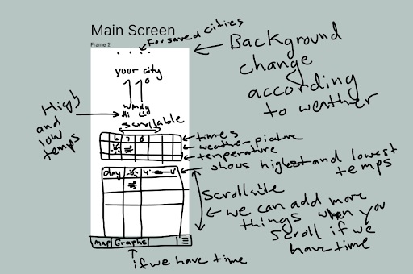
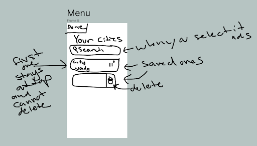
Then we created the base template from class and uploaded it to github so we can work on it together.
We decided to target android API level 23, to keep a high (>95%) device compatibility while also allowing the use of many newer features.
Next was implementing the very basics of a weather app layout. (The picture provided has hardcoded values.)
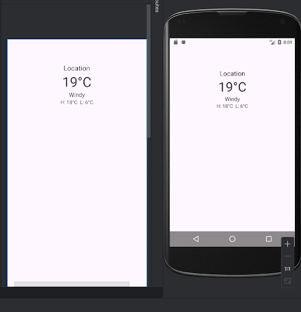
Next we had to get the latitude and longitude of the user. This video was very helpful:
https://www.youtube.com/watch?v=mbQd6frpC3g
Now we had to get the city closest to the user’s current longitude and latitude.
First we looked into using the GeoNames API but the results were not accurate at all. So we went with Google Maps API.
The next step was to use a weather API and get the weather information for the location.
Or so we thought…. 5 different tutorials later, we found out that you need an actual android device to be able to get the device’s longitude and latitude.
So we just decided to make a search bar come up when you first enter the app that searches for cities and then it returns the data for the city you select.
That way we don't have to worry about location services.
So we used the google Place API docs to help set up the SDKS:
https://developers.google.com/maps/documentation/places/android-sdk/config#places-sdk-for-android
Then get a search bar going:
https://developers.google.com/maps/documentation/places/android-sdk/autocomplete
It doesn't work to get the longitude and latitude for all cities, since there isn't data for every city,
but there is for the bigger ones like St. Catharines, and Toronto. So we created an error message if google doesn't have the latitude and longitude of a city.
Here is a couple pictures of the search screen that shows up on app start:
(We had to use nexus 5 instead of nexus 4 because the nexus 5 has google apps enabled.)
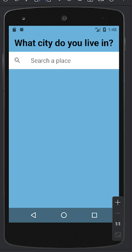
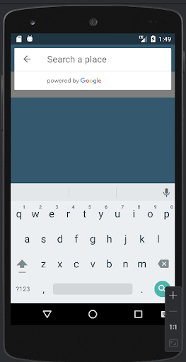
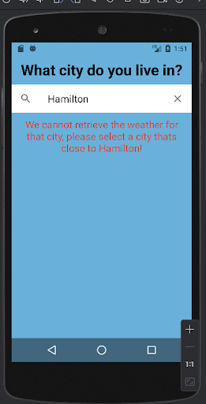
Next we set up the room database to store the location so the user doesn't have to set their home every time they open the app.
It will also store additional locations that the user would want to view the weather for.
Then we set up all the functionality for viewing different cities, as well as a navbar at the bottom.
For the navbar we used this link to help us get a more professional looking navbar:
https://www.youtube.com/watch?v=jOFLmKMOcK0
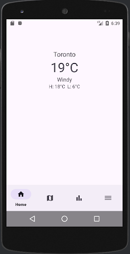
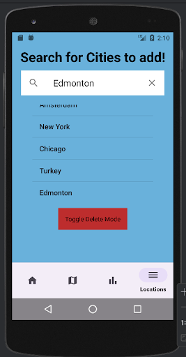
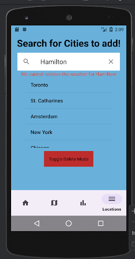
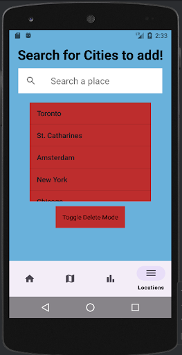
When you click on a different city it will transfer the data of the city you click on to the home page.
We also added a way to delete saved cities. And if the city that was set with the home status gets deleted, and you go to the homescreen,
the message to select your home city comes up again so it can display that by default.
Now that we have coordinates, we were finally able to take the next steps to figure out how to get the weather forecast for a particular longitude and latitude.
To do so we decided to go with the open weather API:
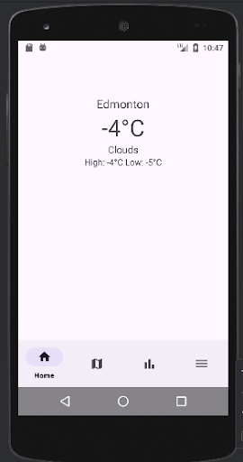
After that we attempted 2 different ways to get a picture to display the weather visually but both ways failed.
The first one was OpenWeather’s icon, we were able to get the link that it mentioned to use but there was a problem with requests and threading
and we couldn't figure out how to fix it. The other way was to add pictures manually, and then figure out what the picture would be through
the id displayed from the OpenWeather link. But nothing displayed for some reason. And we spent too much time on it so we gave up.
Lastly, we added the map of the weather using mapbox. The initial setup of the map view was pretty simple using the mapbox SDK.
Although in order to properly display it, we had to switch the emulated device I was using to a newer one, as the Nexus 5 version did not support
the OpenGL ES version that was needed.
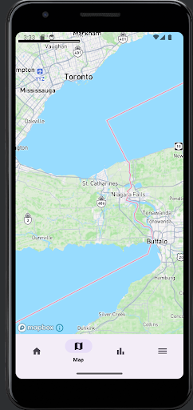
Next up was trying to add the precipitation data to the maps. This turned out to be way more of a headache than previously thought.
Firstly most of the documentation for the Android Mapbox SDK turned out to be written for Kotlin, this means that while most functions were available
for use in java, all code snippets were mostly unable to be directly converted. Secondly when we did finally figure out how to import tilesets into the
Mapbox container, we found much difficulty getting the OpenWeatherMap tileset to interact properly, as the Mapbox container is expecting it to be in GeoJSON
format and it is served as raw tiles. To fix this, a change to either a different weathermap provider, or a different mapview provider may be necessary in
order to fix these issues.
Sources
- API:
- Google Maps API:
- Mapbox API:
- OpenWeather API:
- Room API:
- Tutorials: